This website is a meant to encourage people to become more environmentally friendly, and spread awareness. Some issues to take into consideration include: growing
landfills, climate change, and illegal wildlife crime. This website has a special tool to help you reduce unnecessary waste. You can become introduced to
interesting and helpful tools to save our world. You can also donate here!
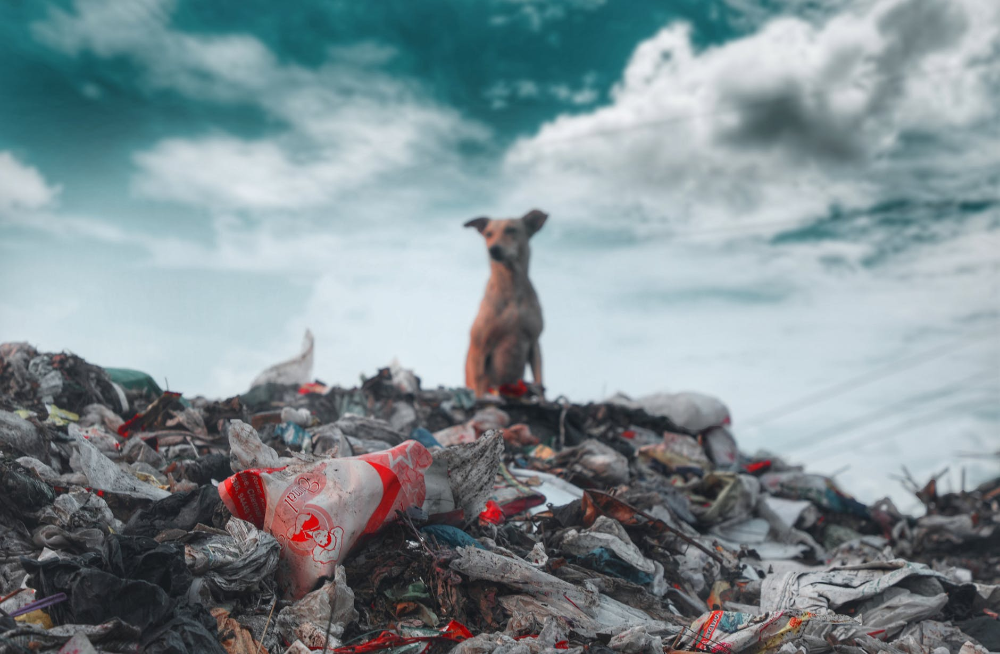
Our world is full of landfill waste in areas that are not for landfill waste. Landfill sites are not appealing to the eye and our constant use of products
that are not biodegradable are making a negative impact on our world. Some waste products contain toxins which contaminates our soil, causing plants to die.
Plants are essential to the Earth because they absorb carbon dioxide, and release oxygen which is essential for humans and animals to breathe.
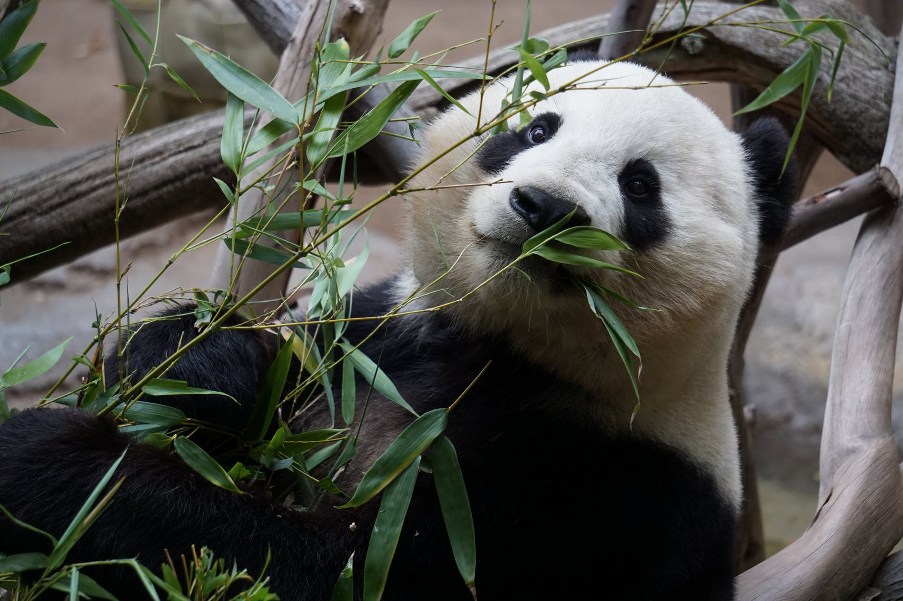
Endangered animals should be protected at all costs. Losing a species could possibly ruin the food chain of the world. There would be less biodiversity in the world if
we begin extracting wildlife. The ecosystem would become imbalanced.
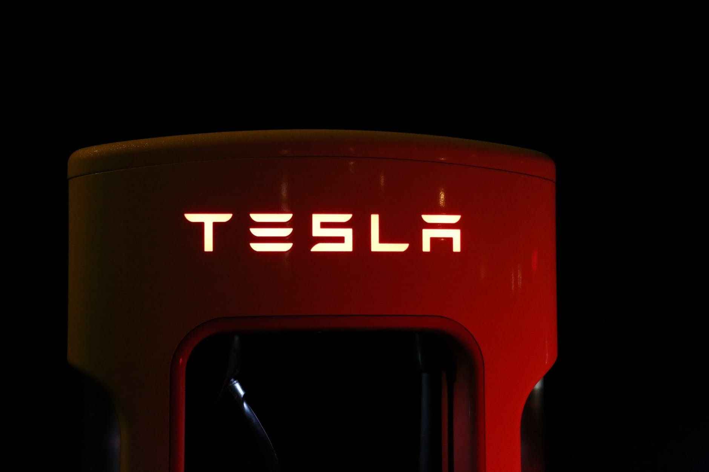
Electric cars have many benefits. These cars are easier to maintain, and do not emmit harmful pollutants.Better air quality will lead to less health problems and costs
caused by air pollution. If you use renewable energy to recharge your EV, you can reduce your greenhouse gas emissions even further.
About Climate Change
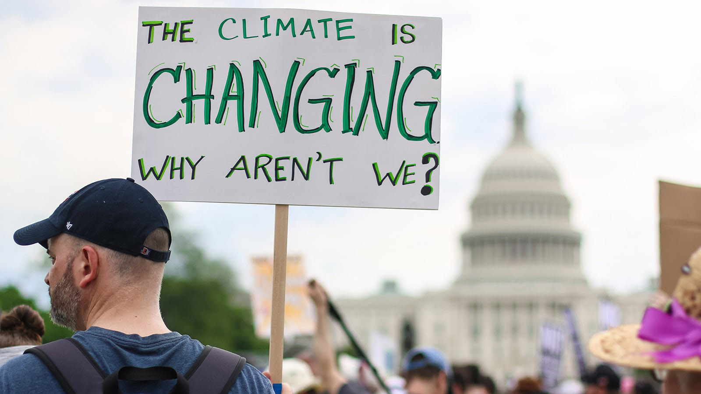
What is Climate Change?
Climate change is the change in global or regional climate patterns, in particular a change apparent from the mid to late 20th century onwared and attributed largely to the increased
levels of atmospheric carbon dioxide produced by the use of fossi fuels. THIS IS A REAL OCCURANCE! Climate change can affect the climate system which inculedes
the atmosphere, hydrosphere, cryosphere, biosphere, and the litmosphere which can result in new weather patterns.
What is Climate Change in Today's Age?
The last ice age markded the start of the modern climate era as well as the start of human civilization. Since, the end of the ice age, natural global warming has occured.
But, the global warming trend in the present day is more than 95% likely to be the result of human activity from the mid-20th century, and this current trend is quite faster than the rate of the post-ice age warming.
A main cause of the global warming aspect of climate change are greenhouse hasses like carbon dioxide.
Problems in Our Enviornment
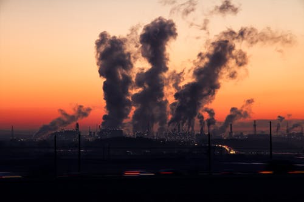
What is Air Pollution?
Air pollution, also known as smog, is a mixture of solid particles and gases in the air.
Dust, pollen, car emissions, and chemicals from factories are some examples of solid particles.
Ozone is an example of a unstable toxic gas in our atmosphere.
Both human activity and natural processes can generate air pollution.
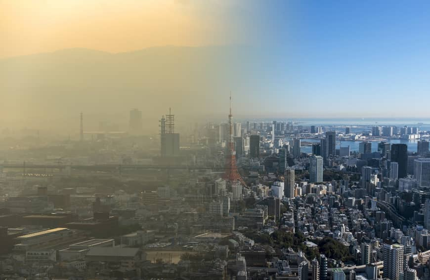
What is Air Polltuion in Today's Age?
Almost everyone in the world drives cars, and this creates exhaust.
The exhaust from cars rises into the atmosphere and contaminates the air.
Air pollution, outside and inside buildings, can become so hazardous that people can experience extreme health issues.
Older adults, people with a heart or lung disease, and children are at greater risks of the affects of air pollution.
Air pollution can also harm animals and food crops.
Solutions
For Global Warming
Waste less water - Take shorter showers, don't leave the tap on, take showers instead of
baths, etc. Buy LED bulbs to sae energy. Don't waste energy when you don't need it.
Publicize for the problems and self awareness (kind of like what this site is doing ;)
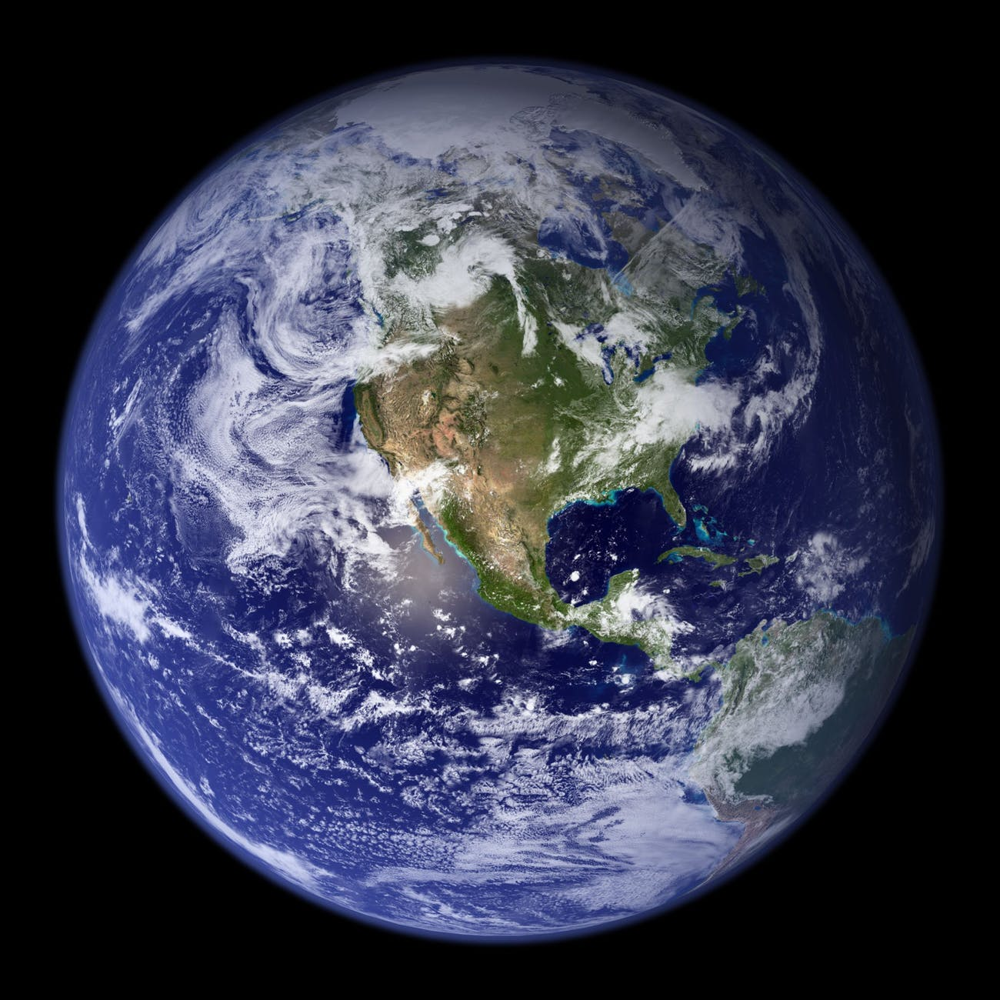
For Climate Change
Use less fossil fuels - carpool to work, use public transportation, etc.
Eat more veggies! - consider going vegetarian, vegan, or just consuming less meat
Plant some trees :) One type of renewable energy source you can use is solar energy.
Install solar panels to save money in the long term and be more eco-friendly
For Deforestation
Make sure you are recycling and using recycled paper goods (check out our hand-dandy
app for this). Use less paper and replace with online stuff.
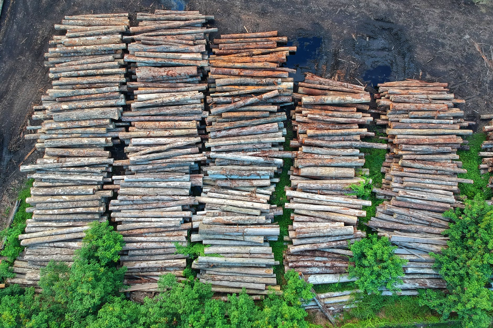
The Right Trash Can
Have you ever wondered if you're throwing away your waste into the right trash can? Have you always questioned whether you put your waste in the right trash can or not?
App
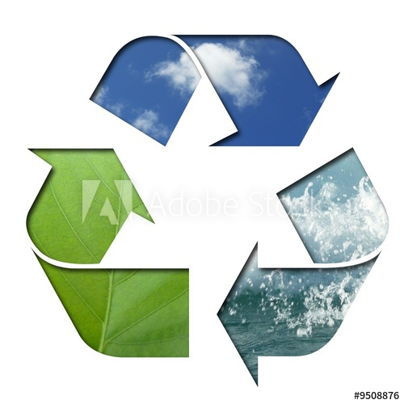
Do you ever question what trash bin to use? Do you ever feel like you're using the wrong one?
This app allows you to search a waste product to find out which trash bin to use. Putting recycling
products into the black trash bin will prevent it from being recycled, resulting in burning
of the product which causes more problems for the environment.
Blue Recycling Bin
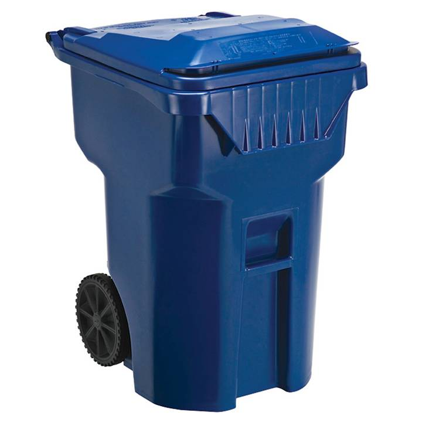
Black Trash Bin
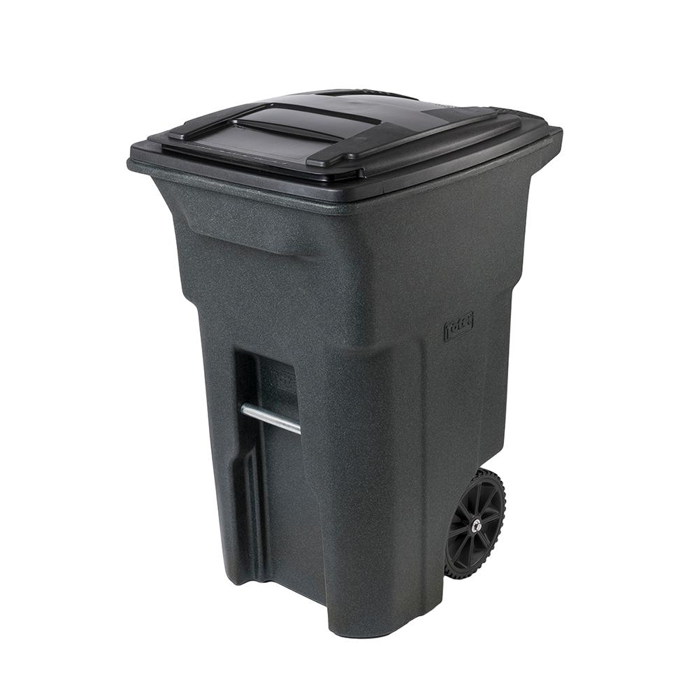
Green Waste Bin
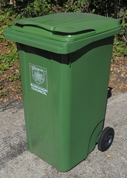
Donate
Here are some links to non-profits that help combat climate change.
This site stands for efficient and clean energy for all, eliminating fossil fuel use
which is harmful for the world. They aim to keep carbon in the ground, help build a
low-carbon economy, and encourage governments to limit emissions.
The Enviornment Defense Club strives to protect the environment through strong science and economics
to create legislation that sparks a clean energy economic boom. They also work to limit fertilizer
pollution.
The Sierra Club Foundation works to better planetary and human health with climate solutions. They
promote the retirement of coal plants and encourage investments in colar and wind technology.
The Union of Concerned Scientists encourages entire industries to use more efficient methods
to energy and food production. The organization does not accept funding from the government or
corporations because they rely on individual member support.
About Us
Panarai Gatenil:
I am 15-years-old, and I live in Arleta. I currently go to John H. Francis Polytechnic
High School in Sun Valley. I enjoy running which is why I ran the LA marathon of 2018
and joined my school's track and field team. On the track and field team, I run the relays,
run the 100, and do long jump. On the weekends, I volunteer at Discovery Cube LA and my temple.
One of my pet peeves is when people do not recycle bottles and cans, which is why I have
decided to use the environment for the theme of this project. You can contact me at: "
panaraipg@gmail.com"
Orla Giffen:
I am 17 years old, and I live in Sunny Southern California. I attend Burroughs High School,
and I hope to get into a stem career after college. I enjoy playing sports, especially soccer,
and I play the oboe for my high school band. In my free time, I volunteer through the organization
National Charity League. I also love to read and listen to music. You can contact me
at "orlagiffen@yahoo.com".
Ashlyn Gunter:
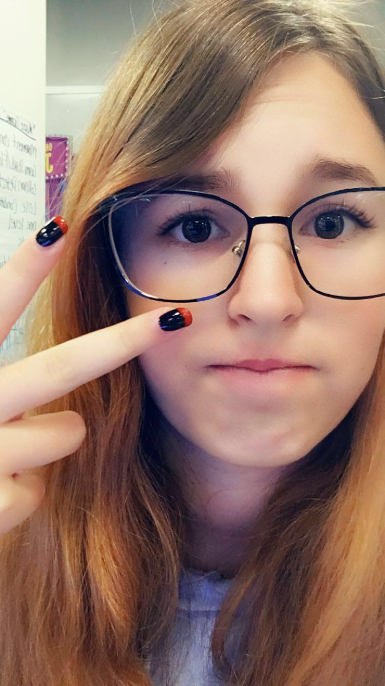
I am 15 year old and I am the youngest in this program. My family is very complicated, I have 2 half sisters, 1 full-blooded sister,
and 2 half brothers. I live with my mother and I see my father alomst every weekend.
My favorite subject in school is math. I love watching tv, drawing, even though I am not
that good at it, and hanging out with friends. My favorite color is black, even though it is not
technically a color. I go to Golden Valley High School in Santa Clarita. I have my
own room at my mom's house. You can contact me at "ashlyngunter@yahoo.com".
Bernette Xiao:
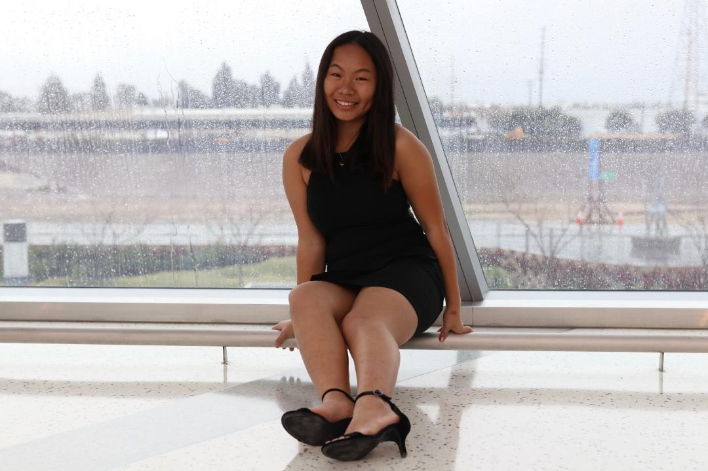
I am 17 years old; my family consists of my dad, my mom, and my dog, Leo!
I like watching TV, doing water sports, and getting food with friends.
I go to Whitney High School in Cerritos. Feel free to contact me at
"bernettexiao1@gmail.com".